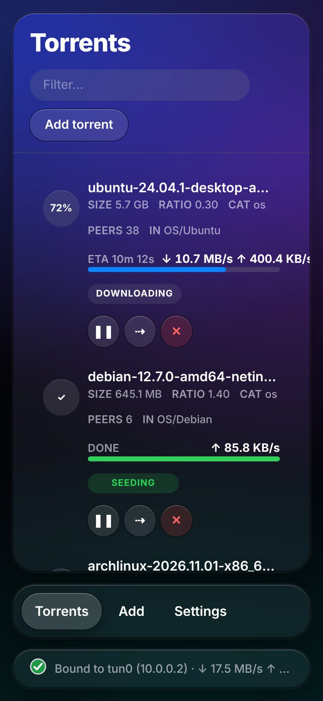
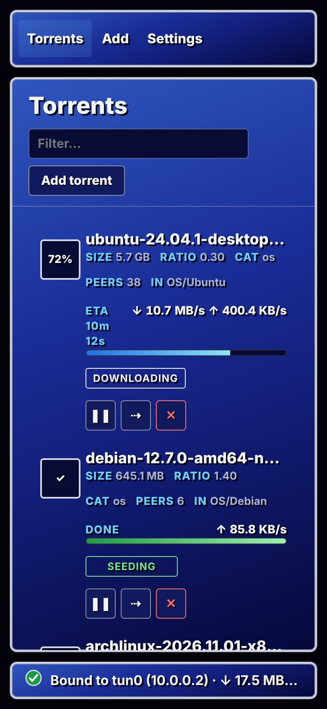
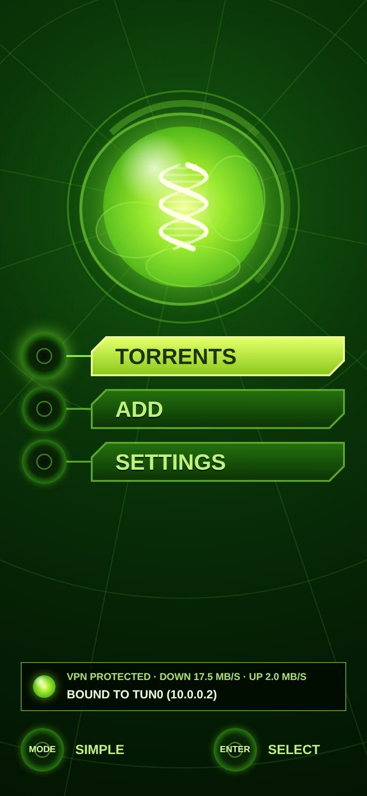
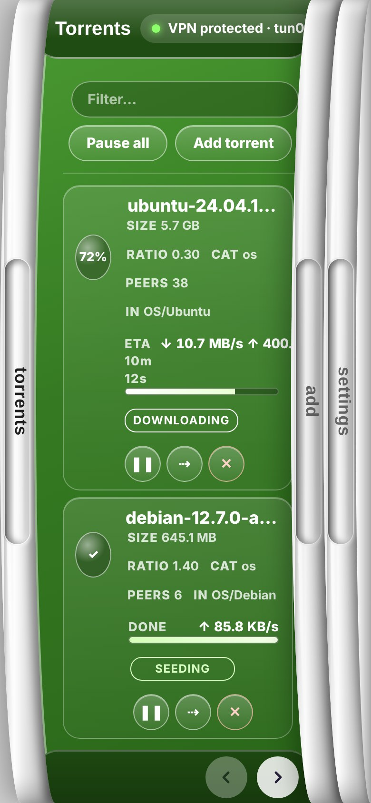
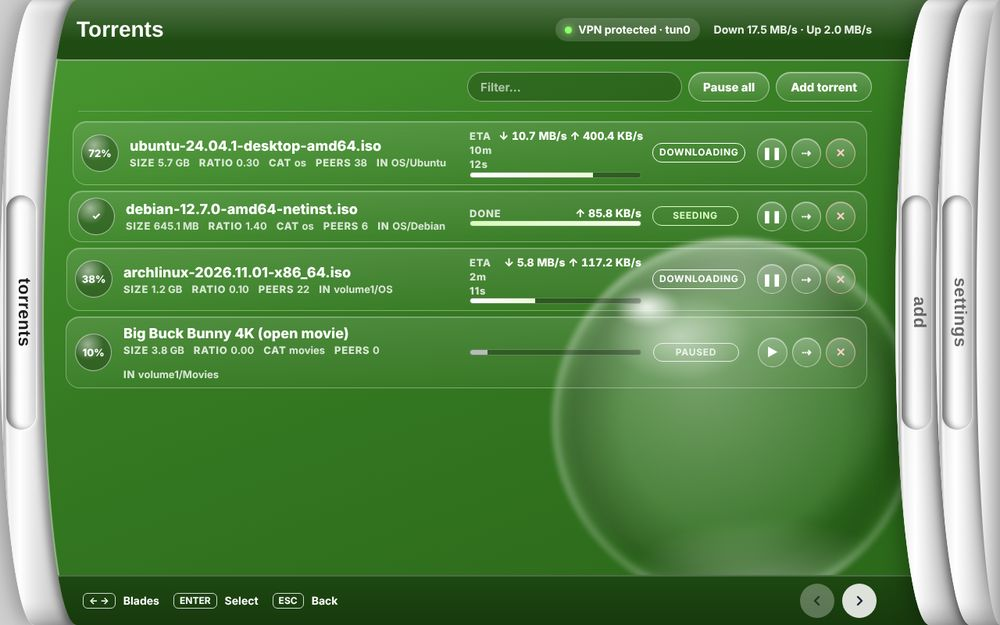
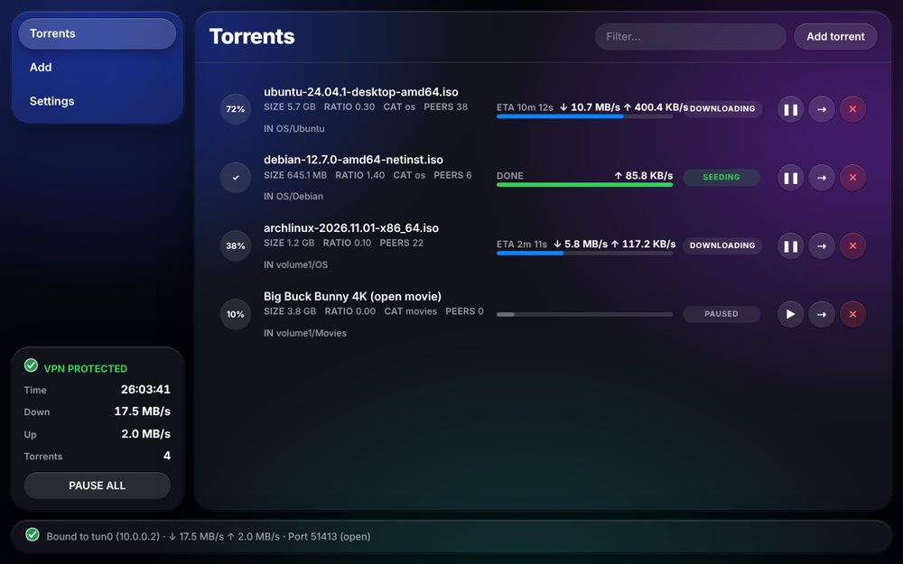
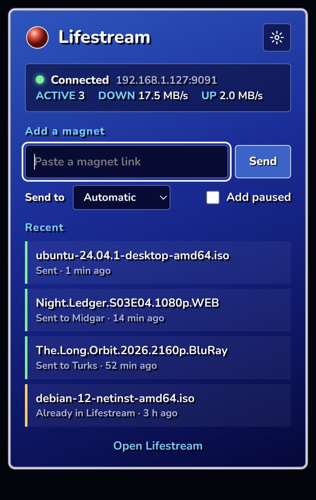
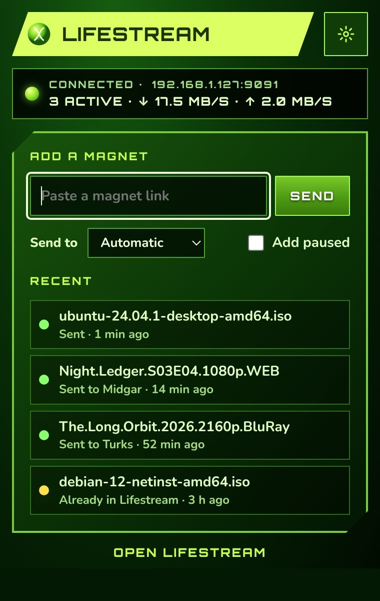
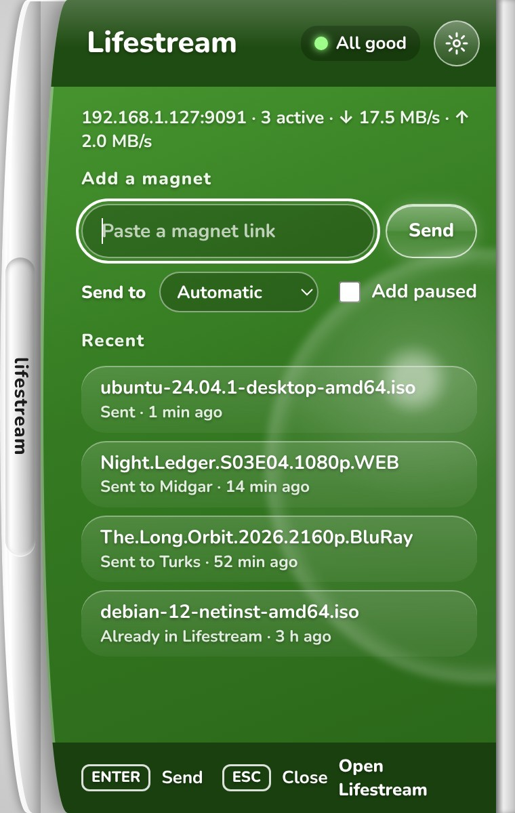

Lifestream
Torrents, behind a shield.
A torrent client built around your VPN. It downloads magnet links and .torrent files, and it is the download engine behind Midgar and Turks.







Privacy first
Your VPN or nothing.
Lifestream binds to your VPN adapter and its kill switch is on from the first launch. If the VPN drops, downloads stop. Not slow down. Stop.
Kill switch
On by default. No VPN, no traffic, ever.
Adapter binding
Talks only through the network adapter you choose.
Leak check
See what the outside world sees before you start.
Port forwarding
Use your VPN’s forwarded port for better connections.
Private tracker mode
Turns off peer sharing features private trackers don’t allow.
Anonymous by design
Keeps identifying details out of what it shares with peers.
Everything in its folder.
Each torrent saves into its matching folder automatically. Drag to reorder the queue, and click a torrent’s square icon to skip or prioritize individual files.
New releases, picked up for you.
RSS rules grab new releases from your feeds automatically. Turtle mode slows everything down with one click when you need the bandwidth, and the tray icon pauses, resumes and switches modes without opening the window.
RSS rules
Auto-download from feeds.
Turtle mode
Slow down on demand.
Simple when you want it.
Simple and Advanced modes, a help icon on every setting, and automatic weekly backups of your settings and torrents. Run it on your PC, on your Synology, or both, and manage the NAS copy from the PC app.

Lifestream for Edge.
A browser extension for Edge and Chrome. Click a magnet link on any page and it goes straight to Lifestream. Set it to automatic and TV episodes go to Midgar, movies go to Turks, and everything else goes to Lifestream. Right-click any magnet or .torrent link to choose where it goes, or paste one into the toolbar panel, which also shows Lifestream’s status and your recent sends.



One look, across the suite.
Lifestream comes in four looks: Liquid Glass, FFVII menu, Xbox and Blades. The gallery at the top of this page shows each one. Pick a look and the rest of the Lifestream suite follows, so every app feels like part of the same set.
Part of the Lifestream suite
Better together.
Six apps that share one look and pass work to each other behind the scenes.